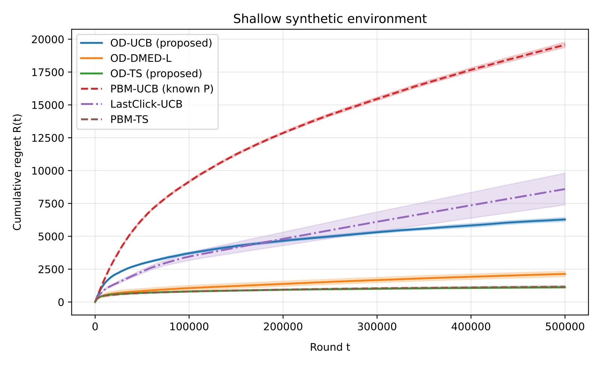
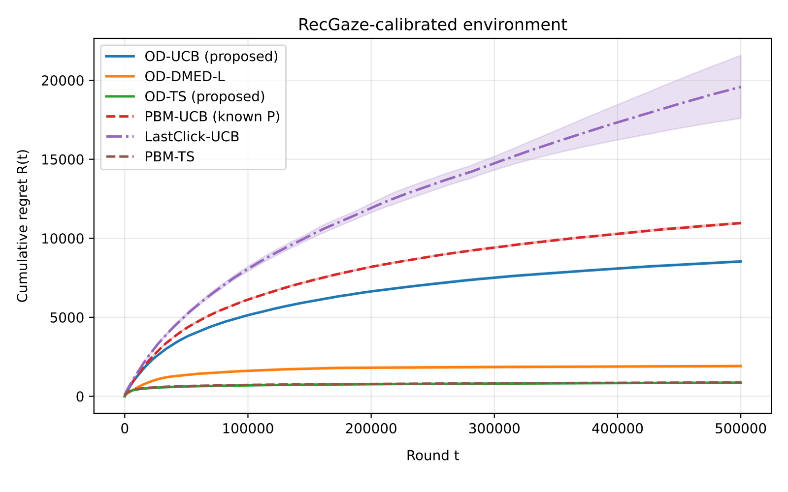
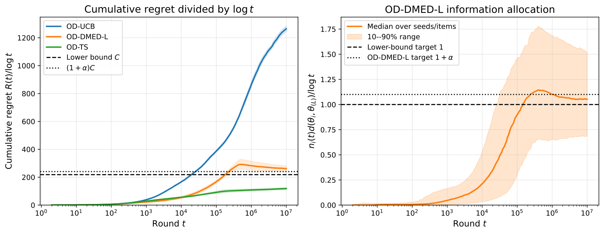

A recommender places a film in a row of items, and the user does not click it. Should the system record "user doesn't like it"? If the user never swiped far enough to see it, that record is wrong. Most online learning-to-rank algorithms cannot tell these two cases apart and have to guess: first estimate roughly how many people see each position, then scale click counts by that proportion. This paper points out that in a "carousel" interface that scrolls sideways, no guessing is needed: the phone or web client can already record the furthest position the user reached this time. The authors use this signal in ranking algorithms: learn only from positions the user actually saw. In a simulated environment built from real users' eye-tracking data, the new algorithm OD-TS does as well as a rival that "knows in advance how likely each position is to be seen", while it does not need those probabilities itself.

1. The problem: no click, disliked or unseen
The problem studied is called a "ranking bandit". The name comes from casino slot machines ("one-armed bandits"): a row of machines, each paying out at a different rate; you don't know which is good and must learn while playing. Pulling the one you think is best is called "exploitation"; occasionally trying ones you're unsure about is called "exploration". Recommendation works the same way: each round, show the user a few items in order, update the estimate of how "attractive" each item is from whether it was clicked, then decide what to show next.
The hard part is items that were not clicked. Existing methods handle them in roughly two ways. One assumes users look from the top down and leave after clicking the first thing they like. The other assumes each position has a fixed "probability of being seen" that falls further down, and scales by it. The second approach has to estimate both how attractive each item is and how many people see each position; with the two mixed together, it learns slowly.
An illustrative example. A film is shown in position 5 a thousand times and never clicked. If only 8% of people see position 5, it was really seen only about 80 times. A method that scales by position, because it cannot see the depth of each showing, only knows "about 80 times on average", and it must first know or estimate that 8%. If the logs tell you how far the user actually swiped each time, you can pick out exactly those 80 showings and directly compute the click share among them, clean and simple.
Carousels and scrollable lists happen to provide this information. The client records the furthest position actually displayed this time, which the authors call the browsing depth. Within the browsing depth, both "clicked" and "seen but not clicked" are certain; positions further along simply do not count this time. That way, items that were never seen are not mistaken for "disliked".
2. The rules the authors set for the problem
To allow mathematical analysis, the authors set a few simplified rules for user behaviour:
- there are 50 candidate items in total, and each round 5 of them are shown in order;
- the user always looks at the first, then looks along in order and stops at some position, chosen at random;
- how far the user swipes has nothing to do with what is shown this round or in what order;
- the user clicks each item seen with a fixed but unknown probability, clicks on different items do not affect each other, and one round can have several clicks.
Under these rules the best policy is obviously to show the 5 most attractive items from most to least attractive. But the algorithm does not know at first which are most attractive and must learn while showing. Algorithms are judged by "regret": in each round, take the clicks the best ordering would have earned if known from the start, subtract the clicks the algorithm actually earned, and add up this gap round after round. Lower regret means the algorithm learns faster and pays less for trial and error.
3. Three algorithms: all learn only from positions "confirmed seen"
The three algorithms share one bookkeeping method: after getting the browsing depth each round, they record one "seen" only for items within the depth, and one "clicked" if an item was clicked. An item's attractiveness estimate is "clicks ÷ times seen". Because the denominator contains only showings that were actually seen, this ratio needs no position scaling.
The three differ in how they trade off "exploitation" and "exploration":
- OD-UCB is UCB: click share plus a confidence term, and items never seen score infinity, so they are sure to be tried. Each round shows the 5 highest scores; this is the simplest to implement.
- OD-TS is Thompson sampling. Because the denominator holds only confirmed views, each item's posterior stays a conjugate Beta distribution that can be sampled directly, so each round costs very little.
- OD-DMED-L normally shows the 5 items currently estimated best. At the same time it checks whether each item outside the top 5 can be ruled worse than number 5: it multiplies the number of confirmed views of that item by the KL divergence between its click rate and number 5's (each click rate treated as a Bernoulli distribution). If the product is below , there are too few views and too small a gap, the evidence is not enough, and the item is queued for one try in the fifth position. Trial and error goes only where the algorithm is unsure, so in theory it is the most economical.
The three algorithms have one thing in common: what really needs settling is only whether an item can make the top 5, i.e. how far it is from number 5. The order among the leaders matters little for "should it be shown".
4. What the theoretical results mean
The authors prove three things; here is only what they mean.
First, no algorithm can avoid some cost of trial and error. Under these rules, regret grows at least with the logarithm of the number of rounds, meaning ten times as many rounds adds only a fixed extra amount of regret. This minimum is set by "how far the items outside the top 5 are from number 5": the smaller the gap, the harder they are to tell apart and the higher the cost.
Second, OD-UCB's regret also grows only logarithmically. The authors compare it with the theoretical upper bound of a similar algorithm that "knows each position's probability of being seen" (PBM-UCB). When very few people see the fifth position, PBM-UCB's bound gets dramatically worse, because it must scale using very few effective observations; OD-UCB uses the real depth and avoids this. The authors admit, though, that OD-UCB's bound is not tight enough to be optimal.
Third, OD-DMED-L achieves the theoretical best in the long run: the growth of its regret can come arbitrarily close to the minimum in the first point.
5. Experiments: against rivals that "know the answer in advance"
The experiments run 500,000 rounds in each of three simulated environments, each round choosing 5 of 50 items to show.
- "Shallow browsing" environment: users mostly look only at the first one or two; only 8% of people see position 5.
- "Deep browsing" environment: users generally look further; half of people see position 5.
- RecGaze environment: parameters come from a real dataset. 87 participants picked films in a carousel interface while researchers recorded their eye movements, clicks and mouse paths. The authors estimated from it how likely each position is to be seen and how likely each film is to be clicked, then used these to simulate users.
There are three rival algorithms. PBM-UCB and PBM-TS are the older methods that scale by position. To give them every advantage, the authors directly told them the true "probability each position is seen", but they cannot see the actual depth of each showing. LastClick-UCB is a common rule of thumb: treat every position up to the last click as "seen", and if nothing was clicked, treat the whole row as seen.
Cumulative regret after 500,000 rounds (lower is better):
| Method | Shallow | Deep | RecGaze |
|---|---|---|---|
| OD-TS (this paper) | 1,122 | 1,327 | 856 |
| PBM-TS (knows each position's chance of being seen in advance) | 1,160 | 1,357 | 877 |
| OD-DMED-L (this paper) | 2,137 | 4,007 | 1,911 |
| OD-UCB (this paper) | 6,281 | 8,762 | 8,532 |
| LastClick-UCB | 8,595 | 9,819 | 19,581 |
| PBM-UCB (knows each position's chance of being seen in advance) | 19,568 | 12,226 | 10,959 |
The most important conclusion: OD-TS and PBM-TS tie; in all three environments the gap between them is within random variation. But PBM-TS was "fed the answer", and in reality nobody knows each position's true probability of being seen; OD-TS needs no such answer and is also simpler to compute. The authors point out that PBM-TS must use a fairly laborious sampling method each round, while OD-TS does not.
Two other points are worth noting. First, the three algorithms that use the real depth beat PBM-UCB and LastClick-UCB in every environment. This shows that once the real depth is available, even the simplest optimistic approach beats the old methods. Second, the less users like to look further along, the more the real depth is worth: PBM-UCB's regret is about 3.1 times OD-UCB's in the shallow environment and only about 1.4 times in the deep one. The reason is intuitive: fewer people see later positions, so scaling by probability there makes bigger errors.

The authors also ran the deep environment to 10 million rounds, to check whether OD-DMED-L really moves toward the theoretical minimum. It does, but slowly: its "regret ÷ logarithm of rounds" peaks around 500,000 rounds and falls steadily after that, still about 9% above the theoretical value at 10 million rounds. This also explains why it trails OD-TS in the 500,000-round experiments: "theoretically best" refers to very long-run behaviour, and in the short run the lottery-style OD-TS is more practical.

6. Limitations and practical meaning
The authors note several limitations. Clicks are assumed not to affect each other, and browsing depth is assumed unrelated to what is shown. In reality the latter may not hold: with something very attractive near the front, users might be more willing to swipe on, or might click and leave; the paper does not handle this. The RecGaze experiment is a simulation with parameters set from real data, not a live test, and cannot prove how it would do with real users. A few films have especially high click rates, which may reflect the experimental task rather than the films being more attractive. Users in RecGaze looked even deeper than in the deep environment, so differences there cannot be attributed to browsing depth alone. The authors plan to relax these assumptions and validate online.
For recommendation teams, the most direct lesson is first check whether your logs contain browsing depth. Many carousel, horizontal-scroll and feed clients already report visible positions or scroll depth, yet offline training and online exploration still treat "shown but not seen" items as "disliked". Where you must learn while recommending, such as cold-starting new items, you can update only from confirmed views and pick items with a lottery approach like OD-TS. It is simple to implement, needs no estimate of position effects, and in the paper it matched the old method that "knew the answer in advance".
Deployment can take three steps. First, store the furthest visible position of each showing as a field in the logs, aligned with click events. Second, compute offline how many people see each position and how fast that falls; the faster it falls, the more you gain by switching to confirmed data. Third, swap the update method on a small share of exploration traffic first, and compare cumulative clicks with the current method. Once live, also check that how far users swipe stays stable under different orderings, because the paper assumes the two are unrelated. On interfaces where fewer and fewer people look further along (such as horizontal swiping on phones), this signal is worth the most.
Discussion
Add experiment details, reproduction notes or a different take. Requires a GitHub sign-in.
Loading the discussion…